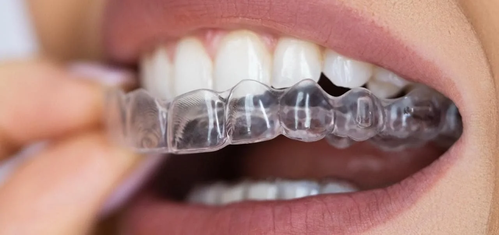
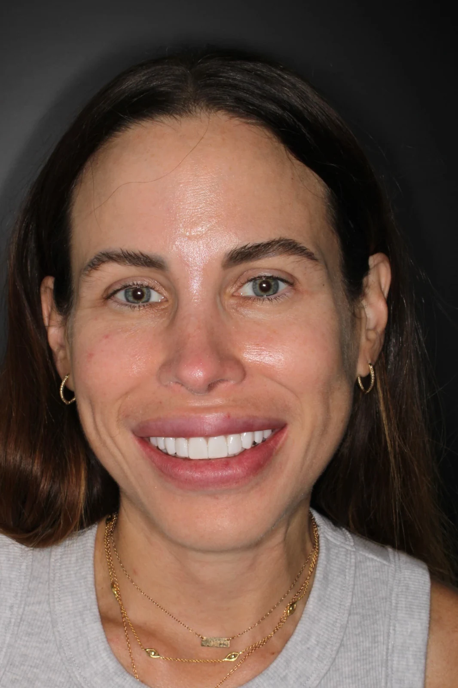
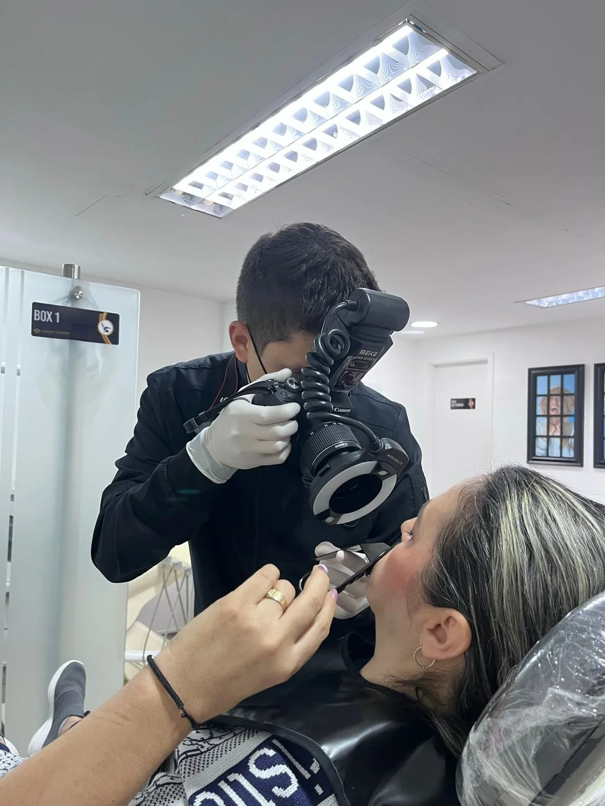

PERSONALISED ASSESSMENT
Align
Explore orthodontics and clear aligners. Suitability and follow-up are determined during assessment.
Orthodontics and dental aesthetics in Bucaramanga. Understand the options with the professional who will assess your smile.

Universidad del Zulia
Universidad Santo Tomás
Images from the practice’s portfolio. Drag the control to compare the photographs. Individual results do not predict your outcome.


Your first conversation is a chance to discuss dental alignment, aesthetics and the follow-up your circumstances may require. Living abroad is part of that planning.
A conversation from abroad. A clinical plan confirmed in person. A coordinated next step.
Contact the practice about your goals, language and country of residence.
The professional explains suitable options, required visits and follow-up.
Coordinate dates and care arrangements with the team before booking travel.
Clarify the follow-up plan and who to contact after returning home.
Ask the practice about remote assessment, language and the next steps for your circumstances. The demonstration calendar is not connected to the clinic.
The clinician determines the visits and follow-up after assessing your case. Confirm this before committing to travel.
The clinical team will explain what information or records it needs through its official channels. Do not send clinical records through this concept website.
Demonstration only. No real appointment is reserved.